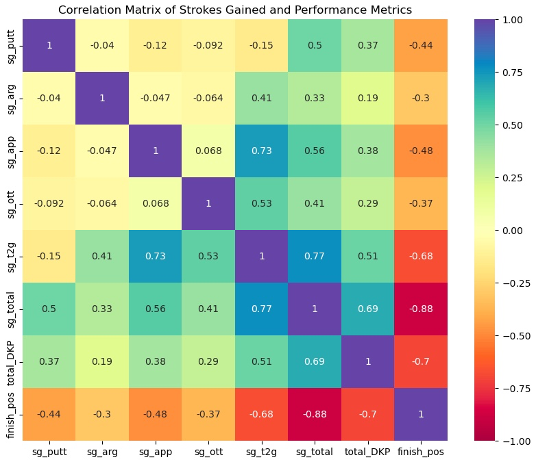

Data Analyst
Description:This project showcases a data analysis of PGA tournament performance, involving data cleaning, exploratory analysis, and visualization using Python libraries including Pandas, NumPy, and Matplotlib. The objective is to uncover trends and insights within professional golf tournament data.
Technologies:Python: Pandas, NumPy, Matplotlib.
Results:This project accomplished accurate cleaning and exploration of tournament data with a Jupyter Notebook walkthrough to aid in exploring different tournament/player scenarios based on performance and golf course.
Description:End-to-end SQL data cleaning of global layoffs data using MySQL Workbench.
Technologies:Excel, MySQL Workbench
Results:This project demonstrates my proficiency in using MySQL to manipulate, clean, and structure large datasets for analysis and reporting."
Description:Exploratory SQL analysis of global layoffs from 2020–2023, uncovering trends in company size, location, and layoff impact during and after COVID-19.
Technologies:MySQL Workbench
Results:This project demonstrates my proficiency in using MySQL to explore and analyze large datasets to provide actionable insights."
I have a background in operations and project coordination, with experience transforming complex data into actionable insights. My toolkit includes Python, Excel, MySQL, Power BI, and Tableau, which I use to clean, analyze, and visualize data to answer those tough business questions. I'm passionate about using data to solve real-world problems and continuously growing in the field of analytics.
Email: JordanrJohnson95@gmail.com
LinkedIn: Jordan Johnson LinkedIn
GitHub: Jordan Johnson GitHub